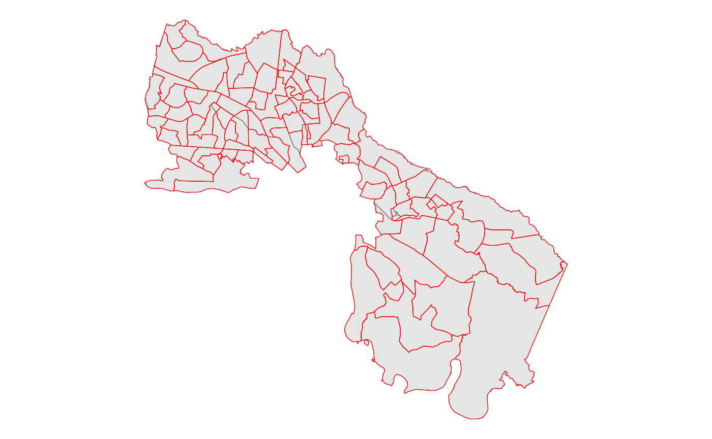

vignettes/Merging_Election_Data.Rmd
Merging_Election_Data.RmdA common issue in electoral geography is that data needs to be tied to a spatial component, but the pieces required for an analysis are not available at the desired levels of geography. This vignette walks through two common tasks. The first is collecting population data for precinct-level data, assuming that all (or nearly all) blocks can be matched to exactly one precinct. The second example is taking precinct-level data, estimating it down to a block level, and then aggregating up to voting districts. The second example is useful when state precincts do not match census voting districts or for when voting districts or precincts have changed over time.
For most analyses, we want some combination of the below packages.
Many sources of electoral data are focused, as expected, on elections. As such, many lack the population data that can be necessary to place racial, turnout, and other population patterns in context.
One of the best sources of electoral data is the Voting and Election Science Team for spatial analysis. Using one county from the Virginia senate election in 2018, this example walks through an easy way to add population data to this by matching based on the geographies.
First, we load in the VA county subset included in the package.
## [1] "087"After noting the countiy included, we can use create_block_table to collect the key population boxes needed for most redistricting analysis.
block <- create_block_table(state = 'VA', county = '087', year = 2010) To avoid needing API access, we can use saved data. These polygons
are simplified using rmapshaper.
data("va_blocks")
block <- va_blocksA typical approach from here is to match the geography from the blocks to the precincts. In this case, the geographies of the blocks are expected to match up well with only one precinct match for each block. This is not necessarily the case for all states or data sources, so blindly matching can be dangerous. Below, I use the default matching, which is by st_centerish, which is the centroid of the shape if it is within the shape or a point on its surface otherwise. There are three other options that could have been used: - centroid: the center of mass of the shape - point: a point on the surface of the shape - area: the intersection that has the largest area (this is most useful when you expect that boundaries don’t line up well)
Using centroid matching:
matches <- geo_match(from = block, to = va18sub, method = 'centroid')Then we can aggregate this up to the precinct level with block2prec.
prec <- block2prec(block_table = block, matches = matches)An alternative way to do this, especially when the edges of counties follow natural geographies like rivers, is to use the block2prec_by_county, which performs the above two steps, but only one county at a time. It returns the tables joined together. Since there is only one county in this example, it is unnecessary.
prec_by_c <- block2prec_by_county(block_table = block, precinct = va18sub, precinct_county_fips = 'COUNTYFP')In this case, it makes no difference, as the va18sub shapes line up very well with the block lines.
In either case, the data is arranged by the order of the second argument (to/precinct), so we can column bind them to have a full dataset for analysis purposes.
fulldata <- bind_cols(va18sub, prec)A second common task is transferring information from one level of geography to another. In this case, I use the same Virginia county subset and blocks, but the end goal is to estimate electoral data in voting districts from known data in precincts.
The first dataset is the Virginia subset as above:
data(va18sub)The second is the block dataset for County 087 (Henrico County).
block <- create_block_table(state = 'VA', county = '087') Third, we can use tinytiger to get voting districts for
the relevant Virginia county.
vtd <- tt_voting_districts(state = 'VA', county = '087', year = 2010)As with other potential calls to the API, this data is also simplified and included.
data("va_vtd")
vtd <- va_vtd
vtd |> ggplot() +
geom_sf() +
geom_sf(data = va18sub, color = 'red', fill = 'NA' )+
theme_void()
Now, an always hopeful bit is that the lines are generally close to each other, so the final quality of the estimate should be fairly good.
Next, we need a vector of matches to precinct data (va18sub) from blocks.
matches_p <- geo_match(from = block, to = va18sub, method = 'centroid')And similarly, a vector of matches to voting district data (vtd) from blocks.
matches_v <- geo_match(from = block, to = vtd, method = 'centroid')Suppose then that we want to estimate votes for Tim Kaine, weighting by VAP.
disagg_kaine <- estimate_down(wts = block$vap, value = va18sub$G18USSDKAI, group = matches_p)Then we can reverse this to get to the vtd level:
vtd_kaine <- estimate_up(value = disagg_kaine, group = matches_v)Generally, we would want to do this for multiple variables, so I recommend using geo_match() to identify the matches once, as you can then apply the estimate_down() and estimate_up() steps to each variable.
However, in cases where you only need to transfer one variable or you are more concerned about simplicity than time, the following will perform those steps:
We estimate down from va18sub to blocks and then up from blocks to vtd
disagg_kaine_geo <- geo_estimate_down(from = va18sub, to = block, wts = block$vap,
value = va18sub$G18USSDKAI, method = 'centroid')
vtd_kaine_geo <- geo_estimate_up(from = block, to = vtd, value = disagg_kaine_geo, method =
'centroid')Again, these two methods give the same answers, but the first approach would allow you to apply the same logic to many variables.
## [1] TRUE